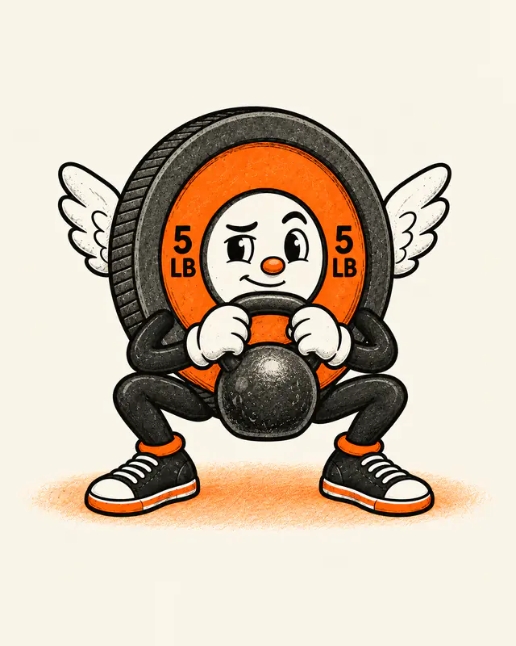
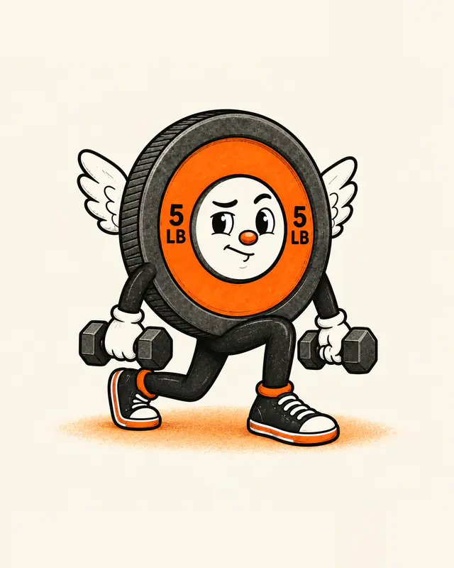
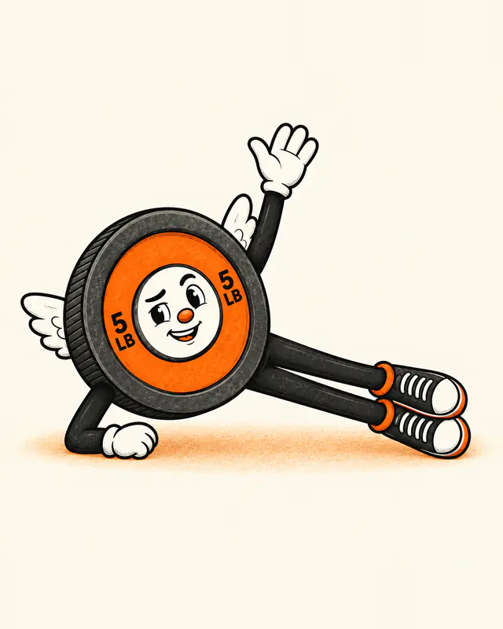

Leg day in 20 minutes
Three moves and one dumbbell. Work through the list, rest, and go again until you have done three rounds.
How it runs: 3 rounds. Rest 60 seconds between sets. Pick a dumbbell you could lift a few more times than the reps ask.
-

1. Goblet squat
3 sets of 10 reps
Hold the dumbbell close at your chest. Sit down between your heels, keep your chest up, then stand tall.
-

2. Reverse lunge
3 sets of 8 reps on each leg
Step one foot back and lower until both knees bend to about a right angle. Push through the front foot to stand. Switch legs.
-

3. Side plank
3 sets of 30 seconds on each side
Elbow under your shoulder, feet stacked, hips lifted in a straight line. Breathe and hold.